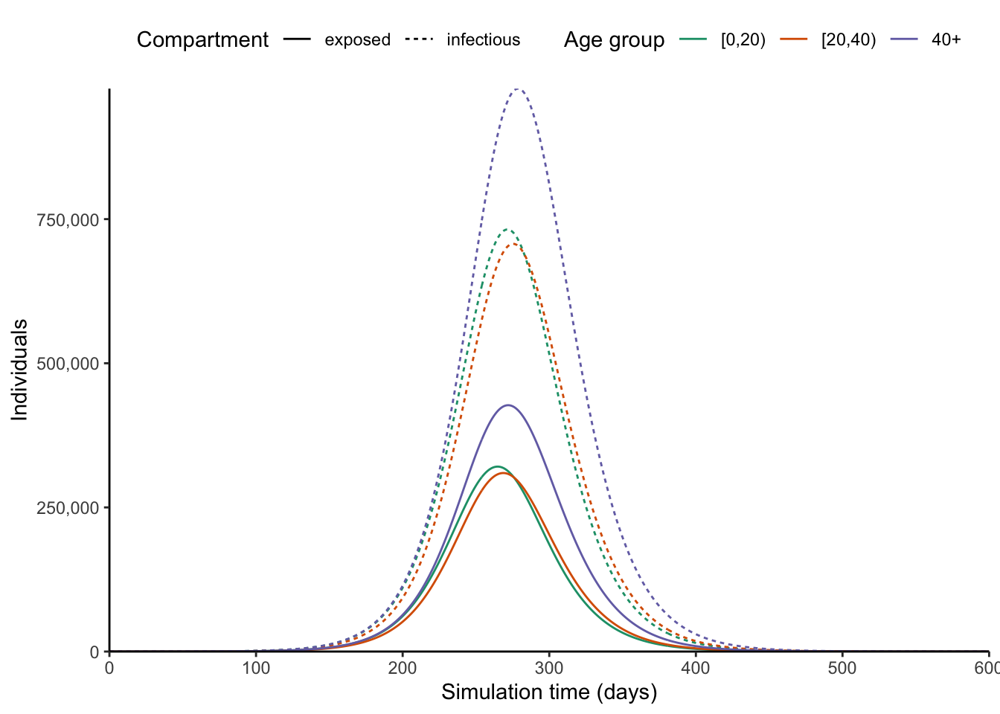

# load epidemics
library(epidemics)
library(socialmixr)
Attaching package: 'socialmixr'The following object is masked from 'package:utils':
citelibrary(ggplot2)
library(data.table)This example is taken from the documentation of the R package epidemics.
# load epidemics
library(epidemics)
library(socialmixr)
Attaching package: 'socialmixr'The following object is masked from 'package:utils':
citelibrary(ggplot2)
library(data.table)# load contact and population data from socialmixr::polymod
polymod <- socialmixr::polymod
contact_data <- socialmixr::contact_matrix(
polymod,
countries = "United Kingdom",
age.limits = c(0, 20, 40),
symmetric = TRUE
)Using POLYMOD social contact data. To cite this in a publication, use the 'cite' functionRemoving participants that have contacts without age information. To change this behaviour, set the 'missing.contact.age' option# prepare contact matrix
contact_matrix <- t(contact_data$matrix)
# prepare the demography vector
demography_vector <- contact_data$demography$population
names(demography_vector) <- rownames(contact_matrix)# initial conditions: one in every 1 million is infected
initial_i <- 1e-6
initial_conditions <- c(
S = 1 - initial_i, E = 0, I = initial_i, R = 0, V = 0
)
# build for all age groups
initial_conditions <- rbind(
initial_conditions,
initial_conditions,
initial_conditions
)
rownames(initial_conditions) <- rownames(contact_matrix)uk_population <- population(
name = "UK",
contact_matrix = contact_matrix,
demography_vector = demography_vector,
initial_conditions = initial_conditions
)# simulate a pandemic, with an R0,
# an infectious period, and an pre-infectious period
pandemic_influenza <- infection(
r0 = 1.5,
preinfectious_period = 3,
infectious_period = 7
)
pandemic_influenza<infection>
infection name: NA
R0: 1.5
Infectious period: 7
Other infection parameters:
"preinfectious_period"# run an epidemic model using `epidemic()`
system.time(output <- epidemic(
model = "default",
population = uk_population,
infection = pandemic_influenza,
time_end = 600, increment = 1.0
)) user system elapsed
0.011 0.001 0.012 # plot figure of epidemic curve
ggplot(
output[compartment %in% c("exposed", "infectious")],
aes(
x = time,
y = value,
col = demography_group,
linetype = compartment
)
) +
geom_line() +
scale_y_continuous(
labels = scales::comma
) +
scale_colour_brewer(
palette = "Dark2",
name = "Age group"
) +
expand_limits(
y = c(0, 500e3)
) +
coord_cartesian(
expand = FALSE
) +
theme_classic() +
theme(
legend.position = "top"
) +
labs(
x = "Simulation time (days)",
linetype = "Compartment",
y = "Individuals"
)